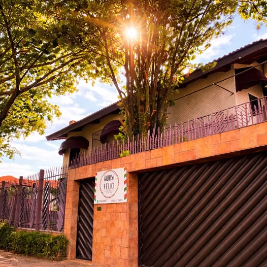
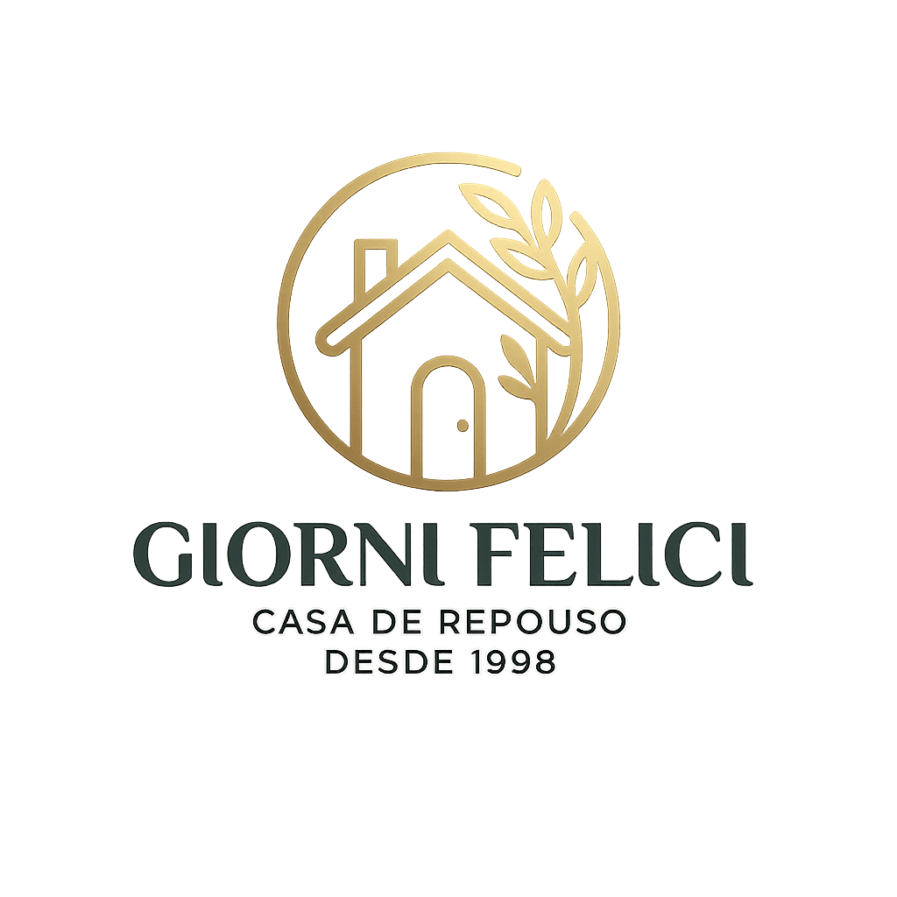

Cuidamos de quem você ama, com a atenção que merece um lar de verdade.
Na Giorni Felici, cada residente é conhecido pelo nome, pelas histórias e pelas pequenas preferências do dia a dia — porque cuidado de verdade começa pela atenção aos detalhes.


Mais que uma casa de repouso, uma extensão da família.
Desde 1998, a Giorni Felici recebe famílias da Água Rasa e de toda São Paulo que buscam, para quem amam, um lugar onde sejam tratados com a dignidade e a atenção de um lar — não de uma instituição.
Nossa equipe é formada por profissionais qualificados em geriatria e cuidados continuados, presentes 24 horas por dia. Mas o que diferencia a Giorni Felici não é só a estrutura: é o cuidado individual com cada residente, respeitando seu ritmo, suas histórias e suas preferências do dia a dia.
Trabalhamos em parceria constante com as famílias, porque sabemos que confiar o cuidado de um ente querido a outras pessoas é uma decisão feita com o coração — e merece ser acompanhada de perto.
Cuidado em cada detalhe
-
Atendimento humanizadoCada residente é acompanhado de forma individual, com respeito ao seu tempo e suas preferências.
-
Equipe especializadaProfissionais qualificados em geriatria e cuidados continuados, presentes 24 horas.
-
Monitoramento de saúdeAcompanhamento contínuo de sinais vitais e bem-estar geral de cada residente.
-
Quartos confortáveisAmbientes pensados para acolher, com privacidade e itens do dia a dia de cada residente.
-
Alimentação balanceadaCardápios elaborados com nutricionista, respeitando restrições e preferências individuais.
-
Área externa e jardimEspaços ao ar livre para passear, tomar sol e participar de atividades em grupo.
-
Comunicação com a famíliaContato frequente para manter todos a par da rotina e do bem-estar do residente.
-
Atividades recreativasJogos, música e oficinas que estimulam a memória, o corpo e a convivência social.
-
Localização privilegiadaNa Água Rasa, de fácil acesso para visitas frequentes da família.
Cuidado sob medida para cada momento
Hospedagem permanente
Um novo lar, com cuidado contínuo, conforto e companhia todos os dias.
Hospedagem temporária
Ideal para períodos de viagem da família ou enquanto se organiza o cuidado de longo prazo.
Recuperação pós-operatória
Acompanhamento próximo durante a recuperação, com equipe preparada para cada etapa.
Cuidados especializados
Suporte individualizado para condições específicas, sempre com orientação profissional.
Tranquilidade para você. Carinho para quem você ama.
Atendimento humanizado
Cada residente é tratado como parte da família, com escuta e respeito.
Segurança 24 horas
Equipe presente em todos os turnos, todos os dias do ano.
Conforto todos os dias
Estrutura pensada para o bem-estar físico e emocional dos residentes.
Família sempre por dentro
Comunicação aberta e constante sobre a rotina de quem você ama.
Tire suas dúvidas
Oferecemos hospedagem permanente e temporária, com quartos confortáveis, alimentação balanceada e acompanhamento de uma equipe presente 24 horas. Cada residente recebe um plano de cuidado individual, montado em conjunto com a família.
Sim, incentivamos visitas frequentes da família — elas fazem parte do cuidado. Os horários podem variar conforme a rotina da casa; fale com nossa equipe pelo WhatsApp para confirmar o melhor horário para sua visita.
Sim. Contamos com profissionais qualificados em cuidados continuados e geriatria, presentes em todos os turnos, para monitorar a saúde e o bem-estar de cada residente.
As refeições são planejadas com foco em equilíbrio nutricional, respeitando restrições alimentares e preferências de cada residente, sempre com acompanhamento de profissionais da área.
O jeito mais rápido é falar com a nossa equipe pelo WhatsApp ou agendar uma visita presencial — assim entendemos melhor as necessidades de cada caso e apresentamos as opções disponíveis.
Agende uma visita e sinta de perto o cuidado da Giorni Felici.
Estamos prontos para mostrar, com transparência, como cuidamos de cada residente como se fosse da família.
Falar no WhatsApp agora